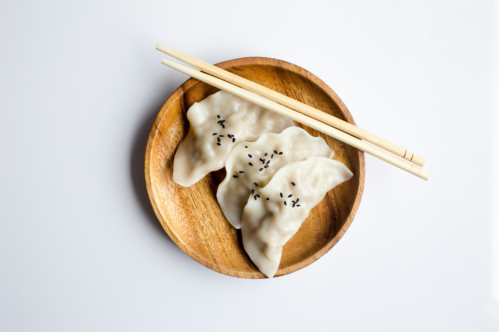
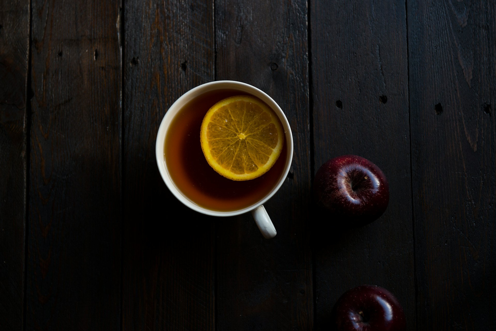

A Cozy Cup – The Perfect Cappuccino Recipe

July 23, 2019 | 3 comments
Cappuccino is more than just coffee—it’s a comforting ritual., The balance of strong espresso, steamed milk, and frothy foam creates a drink that is both bold and smooth.
Originating in Italy, cappuccino has become a global favorite. Its charm lies not only in taste but also in the artistry of presentation, making every cup feel special.
continue reading
Steamy Delights: Homemade Chicken Momo Recipe
Momo, the beloved dumpling of the Himalayas, has a magic that captures both the heart and the appetite. Soft on the outside and juicy inside, these little pockets of joy are perfect for any food lover.
continue reading

July 23, 2019 | 3 comments
A Cup of Comfort – The Perfect Tea Recipe
Tea is more than just a drink—it’s an experience. For many of us, the day doesn’t truly begin until we’ve had that first warm sip. The aroma of freshly brewed tea leaves carries with it both comfort and energy, setting the tone for the hours ahead.
continue reading

July 23, 2019 | 3 comments
Fluffy Delight – The Perfect Pancake Recipe
Pancakes are more than just a breakfast dish—they are a symbol of comfort and simplicity. Their soft, fluffy texture and warm golden color make them irresistible to both children and adults alike.
continue reading

July 23, 2019 | 3 comments